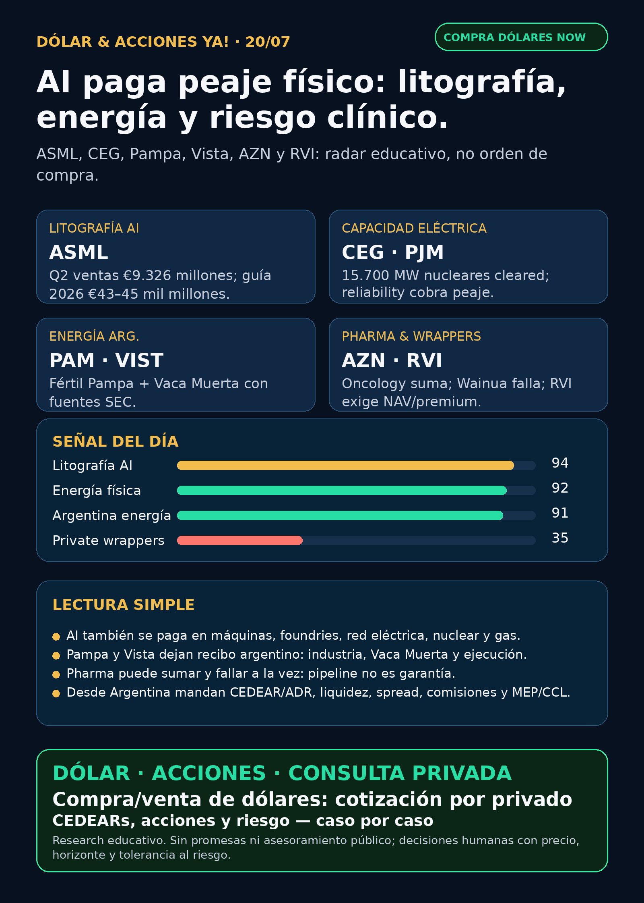

AI paga peaje físico: litografía, energía y riesgo clínico.
ASML confirma semis; CEG/PJM y Pampa/Vista refuerzan energía; AstraZeneca muestra el doble filo de pharma; RVI exige prudencia con wrappers privados.
Texto WhatsApp
Placa del día

Dólar & Acciones YA — 20/07
Fecha de edición: 2026-07-20. Research educativo para Argentina. No es recomendación personalizada de compra ni de venta.
Lectura simple del día
Hoy no hubo una bomba nueva de domingo que cambie todo. La lectura importante es más sobria: AI sigue pagando peajes físicos. Peaje de litografía con ASML, peaje de capacidad eléctrica con Constellation/PJM, peaje de energía argentina con Pampa/Vista, y peaje de investigación clínica en pharma.
En criollo: una empresa puede ser excelente y aun así no ser buena compra a cualquier precio. Y para alguien en Argentina, además hay otra capa: acción global, CEDEAR, ADR, liquidez local, spread, comisiones, MEP/CCL y riesgo de instrumento.
Contexto dólar público usado sólo como referencia educativa: BlueLytics marcó oficial vendedor ARS 1.502 y blue vendedor ARS 1.530 al 2026-07-17 19:45 -03. CriptoYa marcó oficial ask ARS 1.500 al 2026-07-20 02:06, blue ask ARS 1.530 al 02:04, USDT ask ARS 1.575,18 al 02:13; MEP AL30 ARS 1.520,43 y CCL AL30 ARS 1.565,73 tenían timestamp de cierre 2026-07-17 16:59. Para operar de verdad se confirma en broker vivo.
Ordenado por valor educativo y fuerza de señal de radar, no por recomendación de compra.
Tesis central
La señal central de hoy es que la inteligencia artificial sigue aterrizando en cosas duras: máquinas de litografía, foundries, nuclear/capacity markets, gas, fertilizantes, Vaca Muerta y pipelines farmacéuticos. El radar útil no es perseguir el ticker que más subió, sino separar tesis real, precio, instrumento y riesgo.
Señales educativas del día
1) AI semiconductors / litografía — ASML (ASML)
- Qué pasó: ASML reportó Q2 2026 y elevó el outlook 2026.
- Dato clave: ventas netas Q2 €9.326 millones, gross margin 54,0%, net income €2.918 millones, EPS €7,59. Para Q3 guía ventas de €11.000 a €12.000 millones y gross margin 55–57%. Para 2026 elevó ventas esperadas a €43.000–45.000 millones con gross margin 54–56%. La presentación destacó adopción de AI y High-NA EUV con milestone de primer producto Logic high-volume en Intel 18A.
- Fuente primaria: SEC exhibit: https://www.sec.gov/Archives/edgar/data/937966/000162828026048235/pressreleasefinancialresul.htm
- Fuente presentación: https://www.sec.gov/Archives/edgar/data/937966/000162828026048235/presentationinvestorrela.htm
- Lectura en criollo: ASML es una de las máquinas que cobra peaje para que exista AI avanzada. Sin litografía de punta no hay chips de punta. Pero “ASML sí” no significa “all-in”: precio, valuación, ciclo semis y acceso local importan.
- Accionable Argentina: global/CEDEAR a verificar. Antes de ejecución humana: ratio, liquidez, spread, CCL implícito, comisiones y tamaño dentro de cartera.
- Estado: señal fortalecida / vigilar precio.
2) Energía / nuclear-capacity — Constellation Energy (CEG)
- Qué pasó: Constellation reportó por SEC resultados de la subasta PJM 2028–2029.
- Dato clave: todas sus plantas PJM cleared. Reportó 15.700 MW nucleares y 3.175 MW fossil/others, total 18.875 MW cleared. En las zonas listadas, el precio mostrado fue USD 325/MW-day.
- Fuente primaria: SEC 8-K: https://www.sec.gov/Archives/edgar/data/1868275/000186827526000080/ceg-20260714.htm
- Lectura en criollo: cuando la red eléctrica se aprieta por data centers y electrificación, la capacidad firme vale. AI power no es sólo “data center deal”: también son capacity markets, confiabilidad y nuclear baseload.
- Accionable Argentina: global/USA; no asumir CEDEAR o liquidez local sin verificar.
- Estado: señal fortalecida / en radar.
3) Energía Argentina / gas-to-products — Pampa Energía (PAM / PAMP)
- Qué pasó: Pampa aprobó la decisión final de inversión de Fértil Pampa, verificada por SEC 6-K.
- Dato clave: complejo de 6.000 toneladas/día de urea granulada, equivalente a 2,1 millones de toneladas/año, inversión aproximada de USD 2.700 millones, EPC con Tecnimont + SACDE y obra estimada de 41 meses. RIGI/REPIE son condiciones esenciales.
- Fuente primaria: SEC 6-K exhibit: https://www.sec.gov/Archives/edgar/data/1469395/000129281426003804/ex99-1.htm
- Lectura en criollo: gas argentino convertido en fertilizante es energía + industria. Es una tesis local más tangible que muchos proxies globales difíciles.
- Accionable Argentina: PAMP local / PAM ADR; revisar precio, spread, liquidez, regulación, RIGI/REPIE y exposición previa.
- Estado: señal fortalecida / vigilar ejecución.
4) Energía Argentina / Vaca Muerta — Vista (VIST)
- Qué pasó: Vista publicó Q2 2026 por SEC 6-K.
- Dato clave: producción Q2 156.061 boe/d (+32% YoY), oil production 135.427 bbl/d, revenue USD 1.154 millones (+89% YoY), adjusted EBITDA margin 70%, net income USD 321,7 millones (+37%) y capex USD 466,8 millones.
- Fuente primaria: SEC exhibit: https://www.sec.gov/Archives/edgar/data/1762506/000119312526306139/d151775dex1.htm
- Lectura en criollo: Vista deja recibo operativo de Vaca Muerta: producción, revenue, margen y capex. No es sólo narrativa de “Argentina energy”.
- Accionable Argentina/global: acceso por broker a verificar; mirar CCL, spread, crudo, regulación y tamaño.
- Estado: señal fortalecida / vigilar precio y macro.
5) Pharma / oncology y riesgo clínico — AstraZeneca (AZN) / Ionis (IONS)
- Qué pasó positivo: AstraZeneca firmó licencia global exclusiva con Dizal para Zegfrovy/sunvozertinib.
- Dato positivo: Zegfrovy está aprobado en Estados Unidos y China para NSCLC con EGFR exon 20 insertion mutations tras quimio platino. AZN pagará USD 600 millones upfront + hasta USD 900 millones por milestones de desarrollo/regulatorios/ventas, más royalties. Cierre esperado H2 2026; no cambia guidance 2026.
- Fuente primaria positiva: SEC 6-K: https://www.sec.gov/Archives/edgar/data/901832/000165495426006637/a2449m.htm
- Qué pasó negativo: CARDIO-TTRansform Phase III de Wainua/eplontersen en ATTR-CM no alcanzó el endpoint primario.
- Dato negativo: no mostró beneficio estadísticamente significativo en el composite de CV mortality + recurrent CV clinical events hasta 140 semanas vs placebo; seguridad consistente.
- Fuente primaria negativa: SEC 6-K: https://www.sec.gov/Archives/edgar/data/901832/000165495426006554/a6054l.htm
- Lectura en criollo: pharma no es sólo GLP-1 ni “aprobación = sube”. Un pipeline puede sumar por oncology y restar por fracaso clínico en otra indicación.
- Accionable Argentina: global/CEDEAR a verificar; no es una orden de compra.
- Estado: AZN fortalece oncology, pero Wainua debilita una parte del pipeline.
6) Private wrappers / fintech — Robinhood Ventures Fund I (RVI) y sponsor sales
- Qué pasó: Form 4 verificado muestra ventas del sponsor Robinhood Markets en RVI el 14–15/7.
- Dato clave: vendió 19.776 acciones por aprox. USD 563.500, VWAP USD 28,49, quedando 13.265.541 acciones comunes.
- Fuente primaria: SEC XML: https://www.sec.gov/Archives/edgar/data/2085091/000178387926000095/wk-form4_1784233934.xml
- Lectura en criollo: RVI no es una empresa operativa ni “SpaceX/OpenAI directo”. Es un wrapper: hay que mirar NAV, premium/descuento, liquidez, restricciones, holdings y sponsor flow.
- Accionable Argentina: no accionable limpio hasta verificar acceso, NAV/premium y spread.
- Estado: vigilar / riesgo de instrumento.
Watchlist base — seguimiento rápido
- RKLB: revisado. Sin filing operativo nuevo posterior al bloque Iridium; RSS reciente trae predicciones/analistas. Sin señal nueva fuerte.
- NVDA: señal Japón/Noetra/Rubin/physical AI sigue vigente desde la semana pasada; no apareció primaria superior nueva. Estructural fuerte, no repetir como novedad si ya salió.
- PLTR: Form 4 del 17/7: Alexander D. Moore vendió 16.000 acciones por aprox. USD 2,145 millones, VWAP USD 134,05. Señal de valuación/insider-flow, no operacional.
- TSM: Q2 fuerte ya indexado; señal fortalecida, sin nuevo filing superior esta noche.
- MU: Form 4 fue withholding/tax-style, no venta operativa; HBM sigue estructural, sin primaria fresca superior.
- GOOGL/GOOG: revisado; noticias de data-center energy/regulación sin primaria Google nueva usable.
- AAPL / AVGO: acuerdo custom ASIC Apple-Broadcom hasta 2031 sigue vigente desde SEC 8-K previo; sin nueva primaria superior.
- HOOD: CFO Shiv Verma vendió 3.982 acciones por aprox. USD 456.800, VWAP USD 114,71. No cambia tesis; sigue radar por broker/crypto rails/agentic accounts.
- TSLA: robotaxi/NHTSA aparece en RSS, pero sin fuente primaria NHTSA usable. Auditoría, no claim público.
- ASML: top señal estructural por Q2/outlook/High-NA. Señal fortalecida.
- Gold / GLD / GOLD / B: instrumento ambiguo; no reportar precio ni tesis hasta confirmar si es ETF oro, minera, Berkshire clase B u otro.
- RVI: sponsor sales verificadas; riesgo de wrapper/instrumento.
- SNDK / CBRS: CBRS revisado; sin SEC nuevo material. Mantener radar alto por Cerebras/OpenAI/AWS/customer concentration, no headline nuevo.
Energía y AI power
- Generación/nuclear USA: CEG refuerza la tesis de capacidad eléctrica firme: 15.700 MW nucleares + 3.175 MW fossil/others cleared en PJM.
- Argentina gas-to-products: PAM/PAMP Fértil Pampa sigue como señal local fuerte: USD 2.700 millones, urea/amoniaco, RIGI/REPIE.
- Argentina Vaca Muerta: VIST sigue fuerte por producción, revenue y margen. YPF y TGS revisados sin señal primaria nueva superior; CEPU sólo calendario Q2, no catalyst.
- Transformadores / power hardware: Hitachi Energy, Siemens Energy (ENR.DE), GE Vernova (GEV), HD Hyundai Electric, Hyosung/HICO, Virginia Transformer y Delta Star revisados. No apareció primaria fresca fuerte de 24h; lane sigue activo por tesis estructural: transformadores, switchgear, breakers, subestaciones, power semis, DC grid y lead times.
- VST/Bloom: VST mostró filings en SEC index, pero documentos individuales devolvieron 404 en el fetch de esta corrida; queda pendiente. Bloom Energy aparece en RSS, pero sin primaria nueva superior.
Pharma / salud
- AZN: Zegfrovy fortalece oncology; Wainua falla endpoint primario en ATTR-CM. Señal mixta y educativa.
- CELC: REVTORPYK/gedatolisib sigue como señal reciente fuerte verificada por FDA + SEC; biotech de alto riesgo.
- MRK: LIPFENDRA/enlicitide sigue como señal cardiometabólica previa; no hubo actualización nueva esta noche.
- NVO: Wegovy oral Europa sigue vigente; no mezclar con FDA nueva.
- LLY: orforglipron/retatrutide revisado; sin catalyst fresco primario verificable en esta corrida. Evitar titulares reciclados.
- PFE/MRK: revisados sin señal nueva superior.
Radar amplio fuera de watchlist
- Defensa / guerra física: GE sigue como señal industrial fuerte por Q2/backlog/motores. AVAV revisado con Form 4s/144s y noticias de contratos recientes, pero sin primaria DoD/cliente nueva superior para headline. RTX, LMT, NOC, GD, HWM, KTOS, BA, ITA/XAR revisados sin señal primaria fresca fuerte.
- AI infra física: ASML + TSMC + NVDA Japón sostienen el mapa: litografía, foundry, GPU/CPU AI factories, energía/cooling.
- Autonomous mobility / physical AI: TSLA robotaxi/NHTSA queda audit-only por falta de primaria usable. Waymo/Alphabet, Uber, Zoox/Amazon y Joby revisados sin señal verificable superior para headline.
- Space / orbital AI: SPCX/SpaceX sin filing nuevo útil esta noche; RKLB sin filing nuevo. Private wrappers sólo educación hasta NAV/premium/acceso.
- Crypto gobernado / rails: sin señal nueva mejor que Robinhood Chain/Stock Tokens/Agentic Accounts ya indexado. No hay token trade.
- Commodities/oro: no tocar hasta resolver instrumento exacto (GLD vs GOLD vs otro).
Private markets / instrumentos empaquetados
- RVI / Robinhood Ventures Fund I: wrapper listado, no operating company. Form 4 sponsor sales refuerza riesgo de instrumento/liquidez/float.
- DXYZ / Destiny Tech100: narrativa de SpaceX/OpenAI vuelve por social/RSS, pero sin NAV/premium/holdings fresco verificable. Radar educativo, no oportunidad cerrada.
- SPCX / SpaceX: SEC histórico sigue vigente, pero no hubo filing nuevo útil esta noche. RSS de gobernanza/lockup/shorts queda auditoría.
- ARKVX / AGIX / XOVR / VCX / FAPMI / Forge: revisados por discovery sin evidencia fresca verificable. Requieren fact sheet, holdings, NAV/premium, liquidez y acceso Argentina/USA.
- CBRS / Cerebras: público, no wrapper privado. Sin nuevo SEC material; mantener radar alto por OpenAI/AWS/customer concentration y riesgo de valuación/concentración.
Capa Argentina — cómo leer esto desde acá
- CEDEAR: no es igual a comprar la acción original. Tiene ratio, liquidez local, spread, comisiones y CCL implícito.
- MEP/CCL: el tipo de cambio puede mover tu resultado aunque el ticker de afuera no cambie.
- Buena empresa ≠ buen precio: ASML, CEG, Pampa, Vista o AZN pueden tener señales reales y aun así requerir precio de entrada, horizonte, riesgo y tamaño.
- Proxy imperfecto: una energética argentina, una utility nuclear USA, una litográfica europea y un wrapper privado no tienen el mismo riesgo ni el mismo acceso.
- Cuenta USA/global: puede dar acceso más directo y liquidez, pero suma fiscalidad/compliance y riesgo de mercado.
Red flags / hype para ignorar hoy
- “ASML subió guía = comprar todo”: no. Litografía es moat, pero valuación y ciclo importan.
- “AI power = cualquier empresa eléctrica”: no. Hay que distinguir generación, capacidad, red, data-center deals, deuda y regulación.
- “Pampa/Vista son Argentina, entonces es trade fácil”: no. Macro, regulación, CCL, liquidez y petróleo/gas importan.
- “Pharma aprobó/compró algo = comprar”: no. También hay ensayos fallidos y riesgos clínicos.
- “RVI/DXYZ/VCX son SpaceX/OpenAI directo”: no sin NAV, holdings, premium, volumen y restricciones.
- “Robotaxi/FSD resuelto”: no sin fuente regulatoria primaria.
- “Gold/GLD/GOLD/B”: bloqueado hasta confirmar instrumento exacto.
Qué mirar después
1. ASML: pedidos, High-NA EUV, China/export controls, memory/logic demand y valuación.
2. CEG/PJM: precios de capacidad, política nuclear, demanda de data centers y deuda.
3. Pampa/Fértil Pampa: RIGI/REPIE, financiación, EPC, gas y plazos.
4. Vista/Vaca Muerta: producción, capex, realized oil price, regulación y CCL.
5. AstraZeneca: cierre de licencia Zegfrovy, ventas, label y consecuencias del fallo Wainua.
6. RVI/DXYZ/SPCX: NAV, premium/descuento, sponsor sales, float, liquidez y acceso Argentina/USA.
7. Argentina: CEDEAR/acceso local, spread, liquidez, MEP/CCL y tamaño de posición antes de cualquier análisis operativo.
Recibo de cobertura
Watchlist base revisada; energéticas argentinas revisadas; transformadores/power hardware revisado; pharma/GLP-1/oncology revisado; defensa/aeroespacial revisado; space/private wrappers revisado; autonomía/physical AI revisado; crypto gobernado revisado. Text-only vigente: no se generó voz ni media de audio.
Servicio privado
Dólar · Acciones · Consulta privada. Si querés comprar o vender dólares, entender CEDEARs, armar una cartera o revisar riesgo, se ve por privado caso por caso. Cotización de dólares sujeta a confirmación al momento de operar.
Disclaimer
Esto es research educativo para decisión humana. No es asesoramiento financiero personalizado ni recomendación de compra/venta.